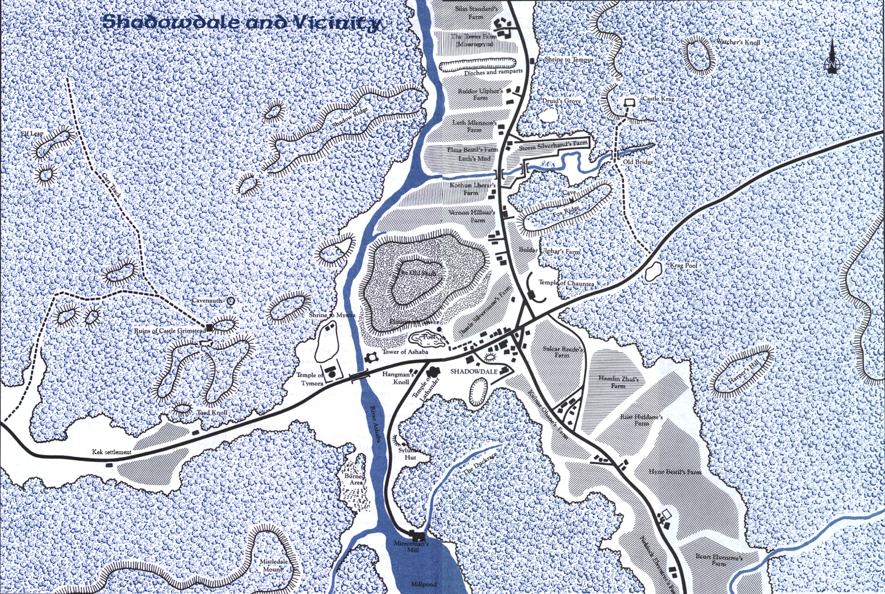

Shadowdale
Notable locations
Inns & Taverns
- Old Skull inn
Supplies
- Weregund the Trader - General supply, common weapons
- Carries most things from PHB Equipment list (Table 44, p. 90 in PHB) that costs 100 gp or less
- Chance he may have items greater than 100 gp cost, but need to ask
- Other items may be ordered, but will take two weeks and will cost 25% than price listed in PHB
- He carries no armor and only common weapons of 10 gp or less
- Old Skull inn stables - Horses
- Always has a few extra horses for sale, but not a large supply
- Since his horses come from customers who have failed to pay their bill, most of his supply are Riding Horses
- Bronn Selgard - Smith, armor & weapons
- Can repair any armor or weapon
- Usually has weapons of less than 50 gp on hand; anything better will have to be made
- All armor is custom made; he has none in stock that you can just buy
Temples & Shrines
- Morningdawn Hall - Temple to Lathander
- May perform healing and raising of the dead
- The House of Plenty - Temple to Chauntea
- May perform healing and raising of the dead
- The House of the Lady - Temple to Tymora
- May perform healing
- Shrine to Mystra
- Shrine to Tempus
Landmarks & Points of Interest
- Tower of Ashaba
- Residence of Mourngrym and Shaerl, the Lord and Lady of Shadowdale
- Also commonly called the Twisted Tower because of it's twisted structure
- Originally built by the Drow who ruled this area centuries ago
- The Druid's Grove
- The druids who frequented this grove have largely left for reasons unknown
- However, it is still the best place to find a druid in the area
- It is still commonly used by rangers
- Elminster's Tower
- the aged wizard has not been seen for months
- Harper's Hill
- The location is known to all, but locals generally avoid it
Map
